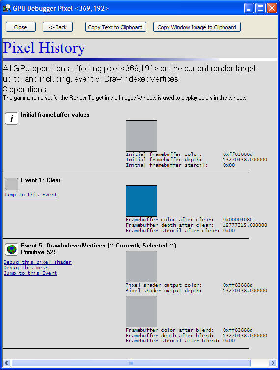
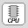
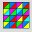

The Pixel History window shows every event that affects whether a selected pixel is to be rendered. It shows the frame buffer's color, depth, and stencil values after each operation. If a pixel shader is used within an event, it will also show the pixel shader's output.

Only certain types of events can effect whether a pixel will be rendered. These events do not always have a one-to-one relationship with the PIX events that are recorded in the Events and Timeline windows. Each event will always show the resulting frame buffer.
| Icon | Event | Description |
|---|---|---|
| Initial | This is always the first event in the Pixel History window and it shows the initial color, depth, and stencil values for the frame buffer before any of the other events. | |
| Clear | The frame buffer was cleared using Clear. | |
| Copy | Pixels were copied to the frame buffer using CopyRects. | |
 |
CPU | Pixels were copied directly to the frame buffer using the CPU. |
| Mesh | The frame buffer was modified as the result of a call to: DrawVertices, DrawVerticesUP, DrawIndexedVertices, DrawIndexedVerticesUP, Begin/End, BeginPush/EndPush, RunPushBuffer. This event will show the pixel shader output. | |
 |
Patch | The frame buffer was modified as the result of a call to either DrawRectPatch or DrawTriPatch. This event will show the pixel shader output. |
| RenderTarget | The depth buffer or stencil buffer was modified as the result of a call to either SetRenderTarget or SetRenderTargetFast. |